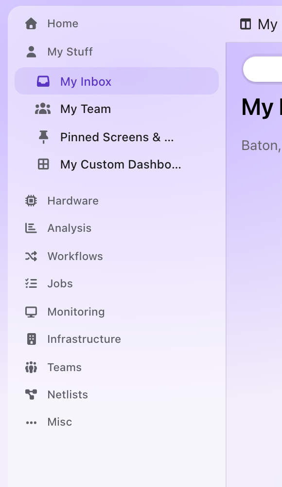
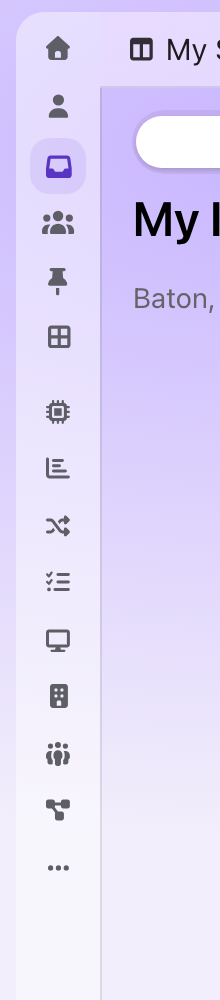
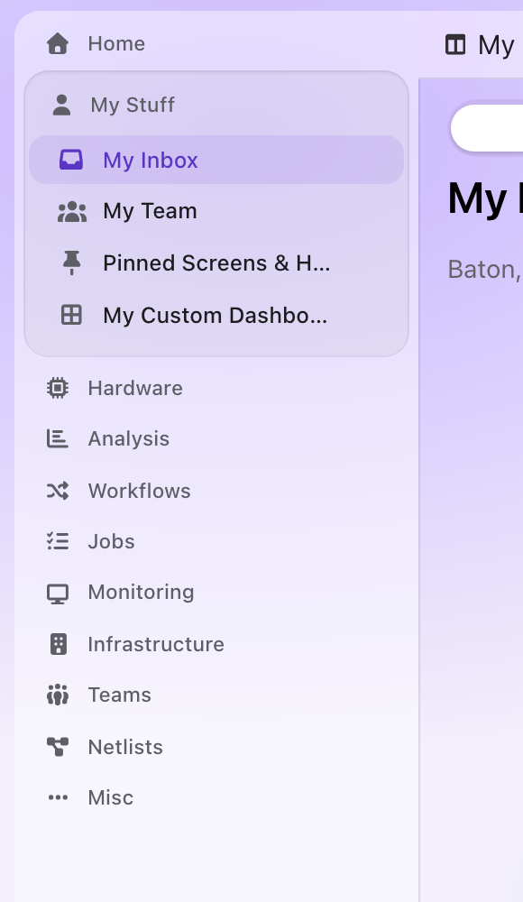
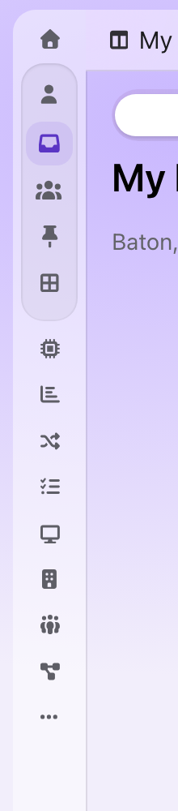
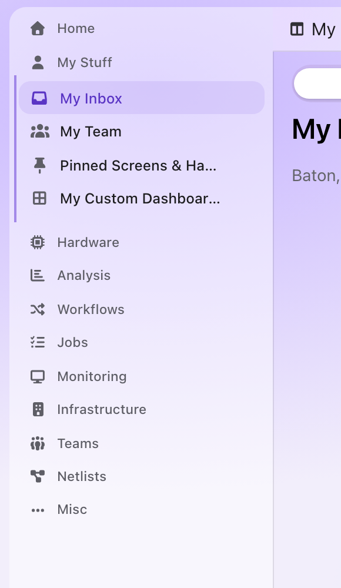
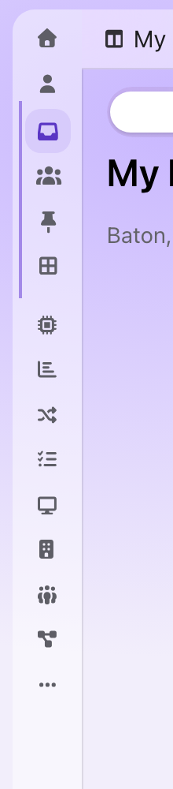
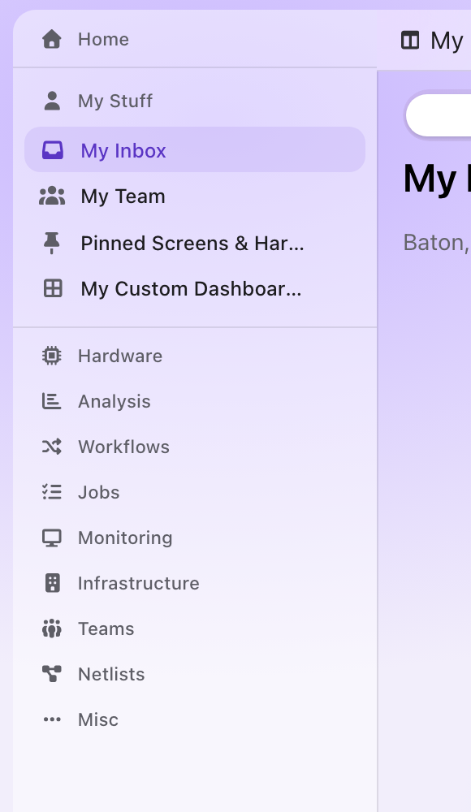
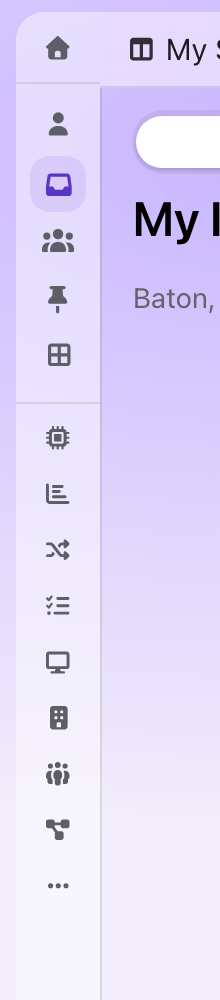

Drawer groups: how to show an open group
Owen asked for alternatives to indenting a group's pages, which looks lame when the drawer shows only icons. Three ways, each pictured at full width and as icons only, on New Jarvis Console's My Inbox page.
mockup: Spell sites that look like the Jarvis console mockups.Today, after this round's fix: a group's pages are a step in at full width, and not at all as icons only.


A group (My Stuff) holds pages (My Inbox, My Team ...). Something has to say which pages are its, without the step in that looked lame as icons only.
Your idea: the open group's label and pages sit in a softly sunken, rounded well, in both modes.
As icons only, no step in: the well alone groups them. At full width, a small step in (half what it was).


- A 4% darkening and a faint inner shadow, the rows' pills inside it.
- Only the OPEN group gets a well; closed groups stay plain rows.
- Cost: the column is a little wider as icons only (the well's margin).
No step in; a thin coloured line runs down beside the open group's pages.


The line is the theme's primary colour, half strength, 2px. Cost: the line sits near the column's edge, so it reads less as a group than a rail.
No step in; the open group is set apart by a divider above and below it, and its label is a little smaller.


Cost: the dividers run the column's full width, so as icons only it reads as a striped list more than a group.